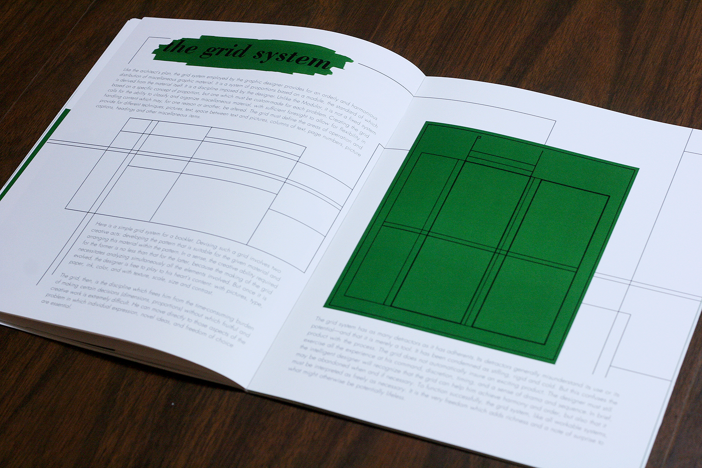
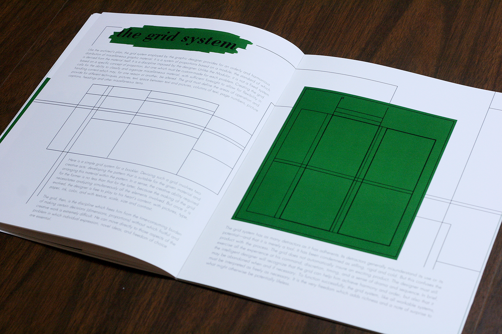

paul rand: design and the play instinct
This was our final project for DES 115: Letterforms & Typography at UC Davis. Given the text and images about Paul Rand, we were to design a book using a grid system.
When researching Paul Rand for inspiration, I found that many of his designs were either extremely simple, or very playful and colorful. After several drafts, I decided on imitating the style of his cover for “Design Form and Chaos”. I settled on Bodoni as the typeface for my header, and Futura for the body type.
I chose green as a spot color to give a bright, playful feeling, including it throughout the book behind the headers as a splash of paint, and in some of the images as well. In order to create balance between the text and images, I carried over elements of the images to surround the text. I also paid careful attention to the kerning of the body text, so that the paragraphs could look as uniform as possible.
 
